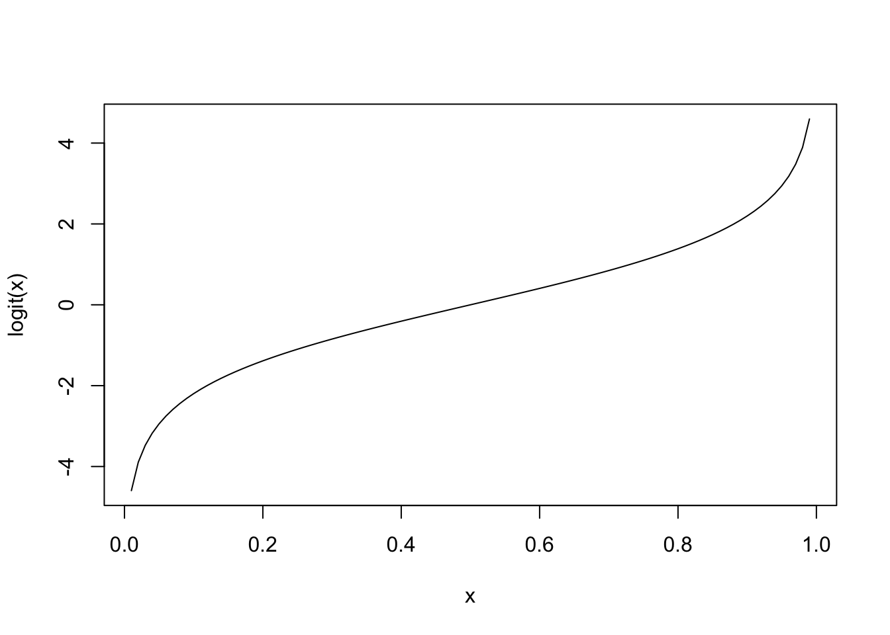
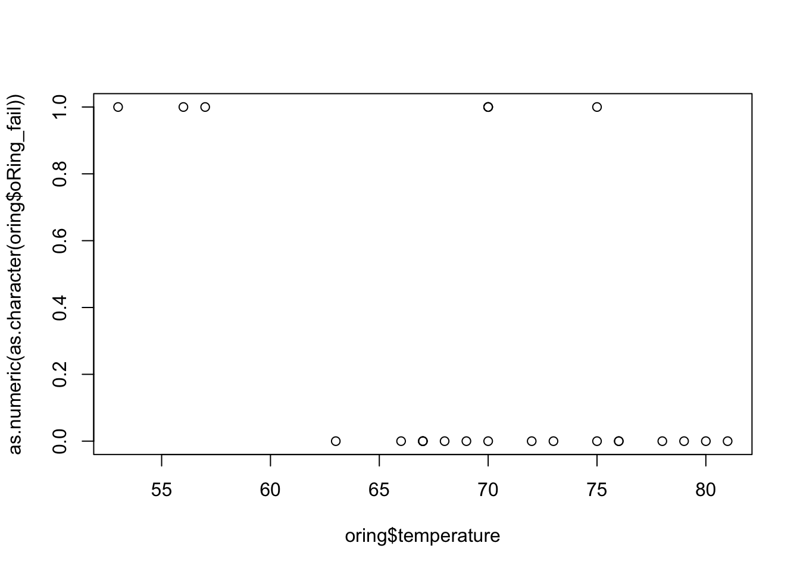
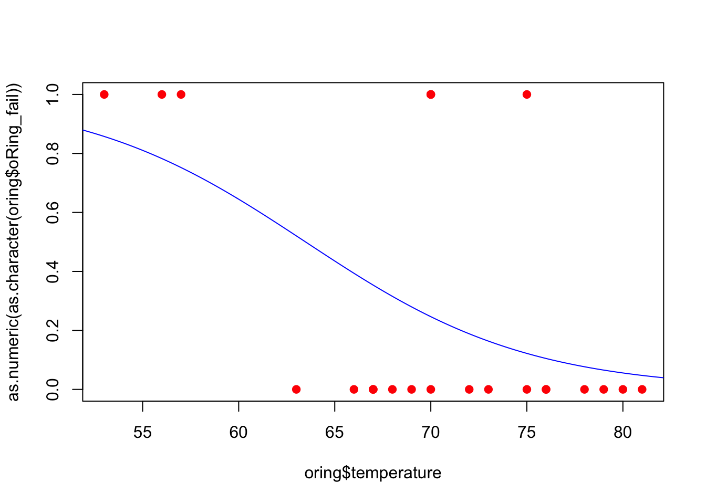
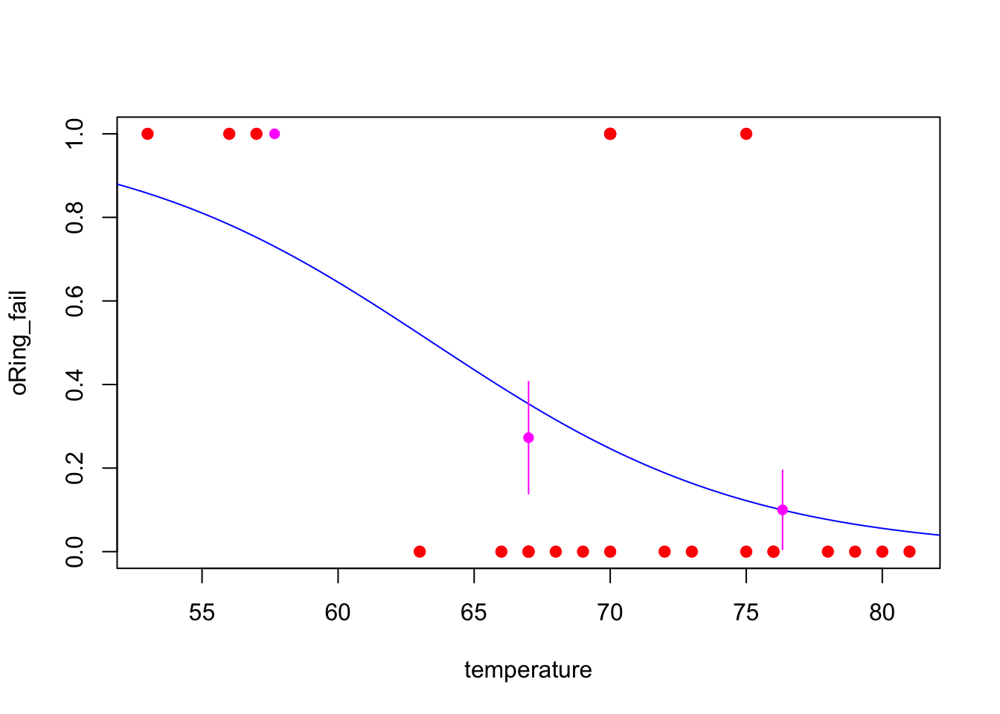

In this case study, we will fit a logistic regression model. As this is the first example of this kind, we will see the basics on how to interpret the fitted model and how to visualize the results. In the next case study, we will see more on how to use logistic regression for classification problems.
For this problem, we will analyse data collected on launch temperature and O-ring failure for the 24 Space Shuttle launches prior to the Challenger disaster of January 1986. Data were retrieved from the Applied Statistics and Probability for Engineers book. You can download the .csv file here. The data set contains the following variables:
temperature (quantitative)oRing_fail (binary): 1 means that at least one O-ring failure had occurred on that launch; and 0, otherwise.Since this case study is slightly different from the previous ones, let’s start with a review of what a logistic regression model is.
The logistic regression model is based on the Bernoulli distribution, which has only two values, 0 and 1, and one parameter, \(\theta\), the probability of success. That is,
\[ \mathbb{P}(Y = y) = \theta^{y} (1 - \theta)^{1 - y}, ~ y = 0, 1. \]
Also, \(\mathbb{E}(Y) = \theta\) and \(\text{Var}(Y) = \theta \cdot (1 - \theta)\).
In this case, we assume that \(\theta(\mathbf{x})\) depends on the values of \(\mathbf{x}\) of the regressors through a linear combination \(\mathbf{x}^{\text{T}}\boldsymbol{\beta}\) for some unknown \(\boldsymbol{\beta}\).
However, \(\theta(\mathbf{x})\) cannot equal \(\mathbf{x}^{\text{T}}\boldsymbol{\beta}\) because \(\theta\) is a probability and hence takes values in \([0, 1]\), while the linear combination \(\mathbf{x}^{\text{T}}\boldsymbol{\beta}\) takes values in \(\mathbb{R}\). Thus, we need a transformation to map these two expressions. In our case, we will choose the logit function, that is,
\[ \texttt{logit}(\theta(\mathbf{x})) = \log\left(\frac{\theta(\mathbf{x})}{1 - \theta(\mathbf{x})}\right) \]
logit <- function (x) { log(x / (1 - x)) }
x <- seq(0.01, 0.99, 0.01)
y <- sapply(x, logit)
plot(x = x, y = y, xlab = 'x', ylab = 'logit(x)', type = 'l')
Thus, we can always write \(\theta(\mathbf{x})\) as
\[ \theta(\mathbf{x}) = g^{-1}(\mathbf{x}^{\text{T}}\boldsymbol{\beta}) = \frac{1}{1 + \exp^{-\mathbf{x}^{\text{T}}\boldsymbol{\beta}}}, \]
such that \(g\) is the logit transformation.
In order to explore the data set and perform initial analyses, we have to read it (with R) first. Provided that the .csv file is saved within the datasets/ folder, one can read the file in the following way.
col.names <- c('temperature', 'oRing_fail')
oring <- read.csv(file = 'datasets/oring.csv', header = FALSE, sep = ',', col.names = col.names)
head(oring, 5)## temperature oRing_fail
## 1 53 1
## 2 56 1
## 3 57 1
## 4 63 0
## 5 66 0Now, let’s see a summary of our data.
summary(oring)## temperature oRing_fail
## Min. :53.00 Min. :0.0000
## 1st Qu.:67.00 1st Qu.:0.0000
## Median :70.00 Median :0.0000
## Mean :69.92 Mean :0.2917
## 3rd Qu.:75.25 3rd Qu.:1.0000
## Max. :81.00 Max. :1.0000However, as oRing_fail is being interpreted as numeric, we have to convert it to factor (categorical variable) before conducting any analysis.
oring$oRing_fail <- as.factor(oring$oRing_fail)
summary(oring)## temperature oRing_fail
## Min. :53.00 0:17
## 1st Qu.:67.00 1: 7
## Median :70.00
## Mean :69.92
## 3rd Qu.:75.25
## Max. :81.00Now, we can graph the data using the plot command for the oring data set.
plot(x = oring$temperature, y = as.numeric(as.character(oring$oRing_fail)))
The above plot is not very interesting since we do not have much data, but we can observe, for instance, that failures have occurred at lower temperature (\(< 60\)) with few exceptions. But now, we can fit our model.
Although we did not say this before, the logistic regression (as the linear regression) are just special cases of a class of models named Generalized Linear Models (GLM), and to fit such a model, we will use the glm() function from base R. We can see the function help by entering the ?glm command.
model <- glm(formula = oRing_fail ~ temperature, data = oring, family = binomial(link = 'logit')) # with logit link function
summary(model)##
## Call:
## glm(formula = oRing_fail ~ temperature, family = binomial(link = "logit"),
## data = oring)
##
## Deviance Residuals:
## Min 1Q Median 3Q Max
## -1.2125 -0.8253 -0.4706 0.5907 2.0512
##
## Coefficients:
## Estimate Std. Error z value Pr(>|z|)
## (Intercept) 10.87535 5.70291 1.907 0.0565 .
## temperature -0.17132 0.08344 -2.053 0.0400 *
## ---
## Signif. codes: 0 '***' 0.001 '**' 0.01 '*' 0.05 '.' 0.1 ' ' 1
##
## (Dispersion parameter for binomial family taken to be 1)
##
## Null deviance: 28.975 on 23 degrees of freedom
## Residual deviance: 23.030 on 22 degrees of freedom
## AIC: 27.03
##
## Number of Fisher Scoring iterations: 4The above summary must be interpreted in a similar as before. However, recall that the estimates and their standard errors are in logits. That is,
\[\begin{align*} \theta(\mathbf{x}) = \frac{1}{1 + \exp^{-(10.875 -0.171\texttt{temperature})}}. \end{align*}\]
Also, we can plot our fitted model.
xx <- seq(50, 85, 0.1)
yy <- predict(model, data.frame(temperature = xx), type = 'response')
# logistic_transf <- function (x) { 1 / (1 + exp(-x)) }
# yy <- sapply(X = yy, FUN = logistic_transf)
plot(x = oring$temperature, y = as.numeric(as.character(oring$oRing_fail)), pch = 19, col = 'red')
lines(xx, yy, col = 'blue')
Remark: The following part is optional.
However, it might difficult to know how good the fit of the model is when data are shown only as 0s and 1s. In this case, we will divide the ranges of temperatures into three, count how many success (in this case, a success is having a failure for the O-ring) and failures, calculate the main proportion incidence in each third, \(\theta\), and add these estimates as points along with their standard error bars \(\sqrt{\theta(1 - \theta)/n}\). Regarding the standard error bars, recall that, if \(Y_i \sim Bernoulli(\theta)\), \(\forall i\), then \(\text{Var}(\bar{\theta}) = \text{Var}(\sum Y_i / n) = \theta(1 - \theta)/n\).
To do this, we obtain the break points for the temperature, and count the number of 1s in each interval.
(tp <- cut(oring$temperature, 3))## [1] (53,62.3] (53,62.3] (53,62.3] (62.3,71.7] (62.3,71.7] (62.3,71.7]
## [7] (62.3,71.7] (62.3,71.7] (62.3,71.7] (62.3,71.7] (62.3,71.7] (62.3,71.7]
## [13] (62.3,71.7] (62.3,71.7] (71.7,81] (71.7,81] (71.7,81] (71.7,81]
## [19] (71.7,81] (71.7,81] (71.7,81] (71.7,81] (71.7,81] (71.7,81]
## Levels: (53,62.3] (62.3,71.7] (71.7,81]tapply(as.numeric(as.character(oring$oRing_fail)), tp, sum)## (53,62.3] (62.3,71.7] (71.7,81]
## 3 3 1Next, based on the total number of cases in each interval (table(tp)), we can compute the probability of success by dividing the number of success by the number of cases.
table(tp)## tp
## (53,62.3] (62.3,71.7] (71.7,81]
## 3 11 10tapply(as.numeric(as.character(oring$oRing_fail)), tp, sum) / table(tp)## (53,62.3] (62.3,71.7] (71.7,81]
## 1.0000000 0.2727273 0.1000000Then, we can do the plot. The following piece of code puts everything together.
xx <- seq(50, 85, 0.1)
yy <- predict(model, data.frame(temperature = xx), type = 'response')
plot(x = oring$temperature, y = as.numeric(as.character(oring$oRing_fail)), xlab = 'temperature', ylab = 'oRing_fail', pch = 19, col = 'red')
lines(xx, yy, col = 'blue')
delta_temp <- (max(oring$temperature) - min(oring$temperature)) / 3
left <- min(oring$temperature) + delta_temp / 2
mid <- left + delta_temp
right <- mid + delta_temp
lmr <- c(left, mid, right)
tp <- cut(oring$temperature, 3)
mean_prop <- as.vector(tapply(as.numeric(as.character(oring$oRing_fail)), tp, sum) / table(tp))
se <- sqrt(mean_prop * (1 - mean_prop) / table(tp))
points(lmr, mean_prop, pch = 16, col = 'magenta')
for (i in 1:3) lines(c(lmr[i], lmr[i]), c(mean_prop[i] + se[i], mean_prop[i] - se[i]), col = 'magenta')
From the above plot, we can see that, our fitted model (excepted, maybe, for low temperatures) describes well the data.
The actual temperature at the Challenger launch was 31∘F. Although our model may not give us good predictions for such temperature (it is way out of our observed range of values), we can compute the probability of observing at least one O-ring failure during the launch in the following way
newdata <- data.frame(temperature = 35)
predict(model, newdata = newdata, type = 'response')## 1
## 0.9924538